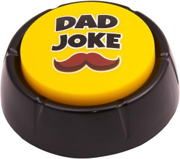

Dad Jokes Rule!
Why dad jokes? Puns and corny humor are the cornerstone of parental comedy. Some people would say they are the sign of a sick mind, while others state that the use of puns displays a sign of high intelligence. However, whether the teller is a simpleton, genius, or somewhere in between, one thing is true: dad jokes bring laughter…and maybe a few groans and eyerolls too.

Joke of the Day
Merch of the Day
Dad Joke Button | Novelty Talking Button Present
- Push the Dad Joke Button for a HILARIOUSLY FUNNY Dad Joke
- Over 50 Dad Jokes to make the entire family LOL - Be the favourite son or daughter, or the ultimate mum!
- The essential gift for every Dad: New Dads, Old Dads, Granddads, Dads to Be, Fathers Day Dads... or just anyone who loves a quality Dad Joke
- Extra loud speaker